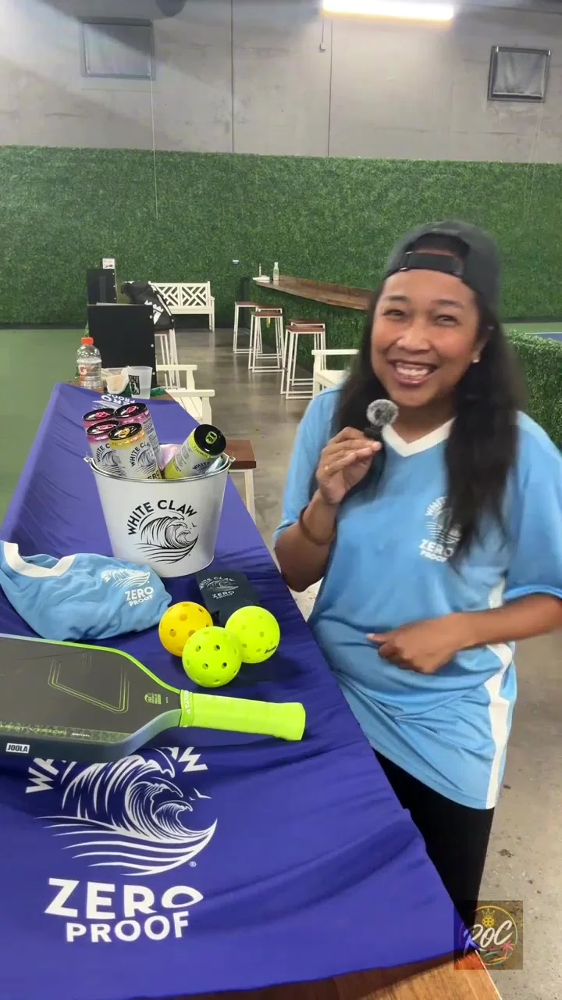
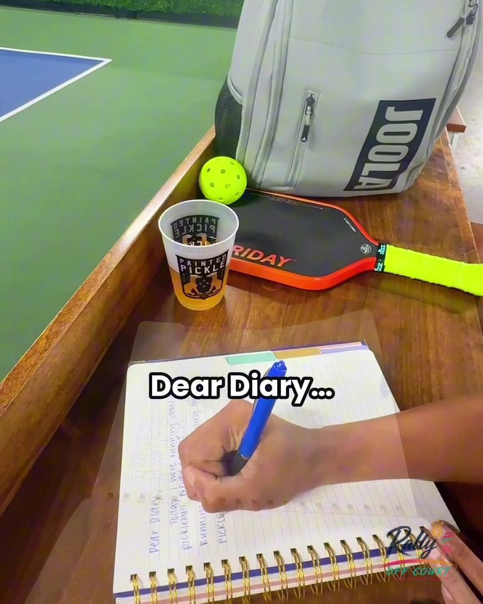
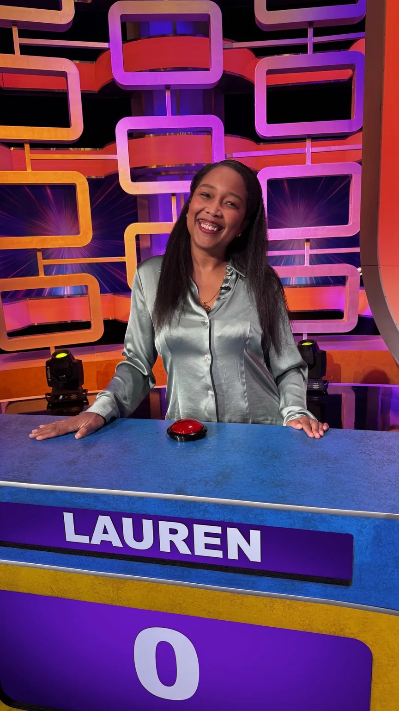
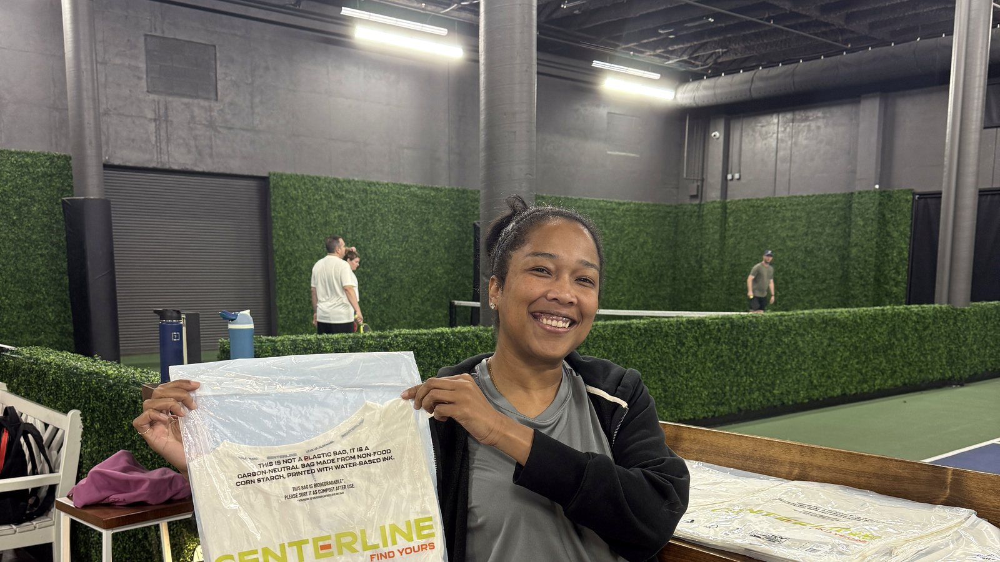
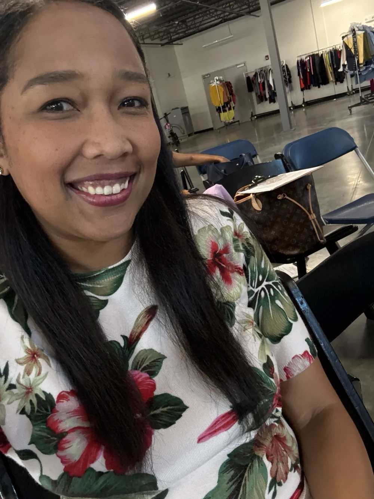
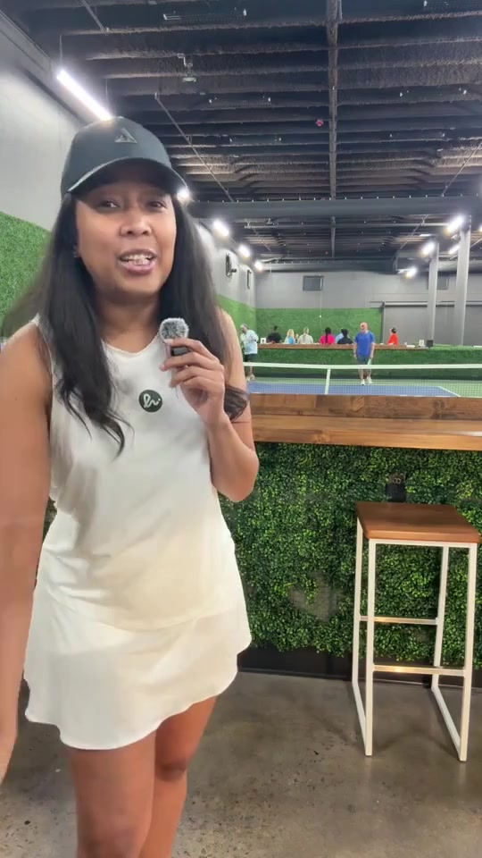
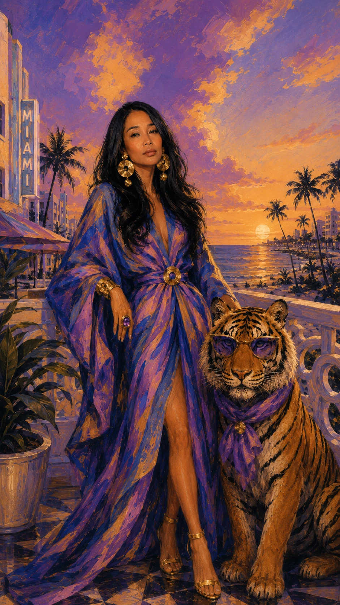

LAURENBUSH
Season Zero · Creator + Host · Atlanta


The camera gets
the person first.
Curiosity before credentials. Point of view before packaging.


OPEN TAB 03: why does a room change when the right person walks in?
MAKE SENSE.

Research enters one side. A useful answer comes out the other.
Dear Diary,
for Montis.
Concept · voice · shoot · edit

OUTSIDE
PRODUCTION.



FIELD TRIP
The partner should feel like they were there, not like they bought a logo placement.
PROGRAM WEATHER / CH 03
THE ROOM
CHANGES
WITH THE SIGNAL.
Not just
in front of it.
Production brain. Strategy brain. Operator brain. The camera is one delivery mechanism.

HER.



CASTING TEST / TAKE 04Host the room. Ask the second question. Carry the integration. Explain the weird thing. Make the audience want another episode.
Casting sheet ↗SEASON ZERO / OFF AIR
Send the
opportunity.
hello@meetlaurenbush.com ↗Atlanta · Creator + Host · select travel + remote